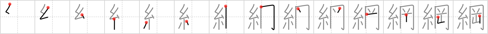

綱
← →
hawser

Reading:
On-Yomi: コウ — Kun-Yomi: つな
Heisig story:
Thread . . . Mount.
Koohii stories:
1) [Terhorst] 21-12-2007(183): Spiderman saves Japan from floating away by tying Mt. Fuji to mainland Asia using a hawser made of web.
2) [raulir] 5-1-2007(46): A sturdy thread is equally obviously hawser (heavy rope). (see previous frame).
3) [burento5] 25-6-2008(38): Easy. In order to climb Mount Fuji you're going to need a strong type of thread, a hawser (heavy rope).
4) [Zactacular] 8-10-2007(16): After Spiderman landed his ship in Japan and used his webbing as a hawser to tie the boat to the dock, he looked p and caught his first glimpse of the majestic Mt. Fuji.
5) [mistamark] 25-1-2009(8): Using a thread to climb that Mount. isn't a good idea, you need a hawser.